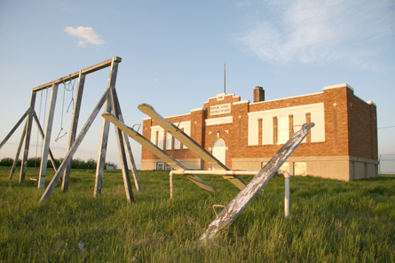
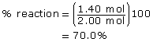

Module 7—Principles of Chemical Equilibrium
 Explore
Explore
Watch Me Video: Very Important View ONLY the first 4 min of this video for now!!
 Read
Read
View the following video to see a demonstration of what is being done
in the mini investigation
“Modelling Dynamic Equilibrium” on page
678 of the textbook. Equilibrium mini-lab demo
 Now view the virtual investigation “Mini Investigation: Modelling Dynamic Equilibrium.”
Now view the virtual investigation “Mini Investigation: Modelling Dynamic Equilibrium.”
As you view the presentation note
that the volume transfers are recorded in a table on the last slide. This
data in the tables has been graphed for you and inserted into your
assignments. You are required to answer the rest of
hte questions in the assignment to complete this Investigation.
 Module
7: Lesson 3 Assignment
Module
7: Lesson 3 Assignment
Retrieve your copy of the Module 7: Lesson 3 Assignment that you saved to your computer earlier in this lesson. Complete the Assignment.
Save your completed Assignment in your course folder. You will receive instructions later in this lesson on when to submit your work to your teacher.
 Read
Read

© Jack Cronkhite/shutterstock
Did all four systems you examined in “Mini Investigation: Modelling Dynamic Equilibrium” achieve an equilibrium?
As you learned earlier, equilibrium in a chemical system exists when the rates of the forward and reverse reactions equal. As you saw in this investigation, the initial volume of reactant, relative to product, was not important in establishing an equilibrium.
Another important aspect of equilibrium is position of equilibrium. The term equal brings to mind a teeter-totter balancing parallel to the ground. If each side of the teeter-totter represents the concentrations of reactant and products respectively, is a position parallel to the ground the only position possible? If you think about some of the other equilibrium systems you have investigated and summarized in the table you have been keeping, does their equilibrium represent equal concentrations of reactant and products?
In the “Evidence of a Reverse Reaction” lab you completed in Lesson 2, you will recall that the equilibrium in that system involved a great deal of calcium sulfate precipitate and an extremely small quantity of dissociated sulfate ions, which were only detectable by the addition of barium ions. This equilibrium clearly favoured the formation of the products (forward reaction) and resulted in a situation in which the concentration of the products was higher than that of the reactant species.
Systems that significantly favour the formation of products are quantitative systems. You will recall from your work in Chemistry 20 that you were able to perform stoichiometric calculations on chemical systems that had percentage reactions of over 99%. In these systems and relative to the quantity of product, very little reactant remains once equilibrium is established.
Read the section “Chemical Reaction Equilibrium” on pages 678–680 in the textbook to learn more about the different positions of equilibrium in chemical systems.
 Self-Check
Self-Check
SC 1. Complete “Practice” questions 3, 4, and 7 on page 682 in the textbook.
Self-Check
Answers
Contact your teacher if your answers vary significantly from the answers provided here.
SC 1.
Practice 3.
- A system at equilibrium appears not to change, or has a constant
set of observable properties.
- An equilibrium involves a forward and a reverse reaction
occurring at equal rates. These two reactions involve change at the
microscopic level; because change occurs, the system is dynamic.
- The rates of the forward and reverse reactions are equal.
Practice 4.
- CH4(g) + Cl2(g)
 CH3Cl(g)
+ HCl(g)
CH3Cl(g)
+ HCl(g)
The maximum possible yield of CH3Cl(g) is 2.00 mol. This is because 2.00 mol of CH4(g) is used and it is the limiting reagent, and all reactants combine in 1:1 molar proportions.
- 
The position of the equilibrium favours the products.
Practice 7.
- Cu(s) + 2 Ag+(aq) → Cu2+(aq) + 2 Ag(s)
- <50%
Ca2+(aq) + SO42–(aq) CaSO4(s)
- >50%
CH3COOH(aq) + H2O(l) CH3COO–(aq) + H3O+(aq)